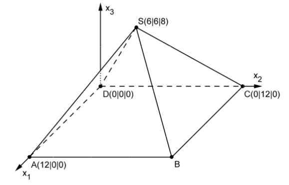

Pyramid¶
Problem
The figure depicts a model of an exhibition pavilion which has the shape of a regular four-sided pyramid with a square base and is placed on a horizontal surface. In this model, the triangle \(BCS\) describes the southern exterior wall of the pavilion. In the coordinate system, the length unit corresponds to 1 m, i.e. the base of the pavilion has a lateral length of 12 m.
Give the coordinates of the point \(B\) and determine the volume of the pavilion.
In the model, the southern exterior wall of the pavilion lies in the plane \(E\). Determine the equation of \(E\) in its point-normal form.
(possible result: \(E : 4x_2+3x_3-48=0\))
The interior work of the pavilion requires a thin and as short as possible bar between the center point of the base and the southern exterior wall. Determine at which height above the base the bar has to be attached to the exterior wall.
Solar panels are mounted flush on some part of the southern exterior wall. In the model, the solar panels cover a triangular surface the vertices of which are the top \(S\), as well as the centers of the edges \([SB]\) and \([SC]\).
Find the area of the surface covered by the solar panels.
The electric power delivered by the solar panels depends amongst other things on the magnitude of the inclination angle with respect to the horizontal. The table gives the percentage of the delivered power compared to the maximally possible power as a function of the inclination angle. Estimate this percentage for the solar panels of the pavilion - after calculation of the inclination angle - by making use of the table.
inclination angle |
0° |
10° |
20° |
30° |
40° |
50° |
60° |
70° |
80° |
90° |
|---|---|---|---|---|---|---|---|---|---|---|
percentage of maximal power |
87% |
93% |
97% |
100% |
100% |
98% |
94% |
88% |
80% |
69% |
Solution of part a
The coordinates of point \(B\) can be computed by adding the vectors of \(D\) to \(A\) and \(C\), respectively, yielding \(B(12|12|0)\).
The volume \(V\) of the pyramid can be determined by means of the formula
with base area \(A\) and height h. In general, the formula
holds, which can easily be evaluated with Sage.
Solution of part b
The plane \(E\) which is given by the points \(B\), \(C\) and \(S\) shall be computed. The equation is to be given in normal-point form. One obtains the normal vector by evaluating the cross-product of two vectors spanning the plane from the point vectors.
With the vector \(\vec{B}\) to point \(B\) on the plane, the equation of the plane in point-normal form thus becomes
or
With Sage, one obtains this result as follows:
The result corresponds up to a factor of 48 to the result given in the problem.
Solution of part c
The bar from the center of the base \(S' (6|6|0)\) to the southern exterior wall shall be as short as possible. Thus, the normal to the plane \(E\) through the point \(S'\) is sought after. Once the normal is determined, we can compute the intersection with the plane and hence read off the height from its \(x_3\)-coordinate.
The normal vector \(\vec{n}\) of the plane was already calculated in part b. We define the auxiliary line
and seek its intersection with the plane \(E\). Plugging the coordinates \(x_2(t)\) und \(x_3(t)\) into the equation of the plane and solving for \(t\) yields \(t=\frac{1}{25}\). The desired height then equals 2.88 m.
This result can be confirmed by Sage by following the method just described and making use of the abstractly formulated equation of the plane derived in part b.
Solution of part d
The area can be computed with the help of the cross-product:
We leave the calculations to Sage and obtain
Solution of part e
The inclination angle of the plane \(E\) with respect to the \(x_1\)-\(x_2\)-plane equals the angle between the two normals of the planes. For the \(x_1\)-\(x_2\)-plane, the normal vector corresponds to the unit vector along the \(x_3\)-direction. The normal vector of the plane \(E\) is the vector \(\vec n\) which was determined in part b. The desired angle can be computed by means of the following formula:
For an angle of 53,1°, one can estimate the delivered power with the help of the table to be 96 to 97% of the maximal power.